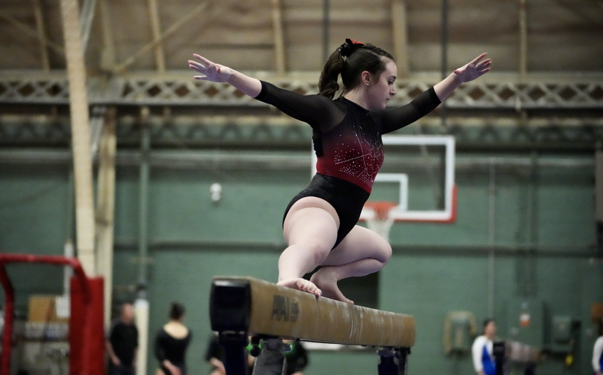
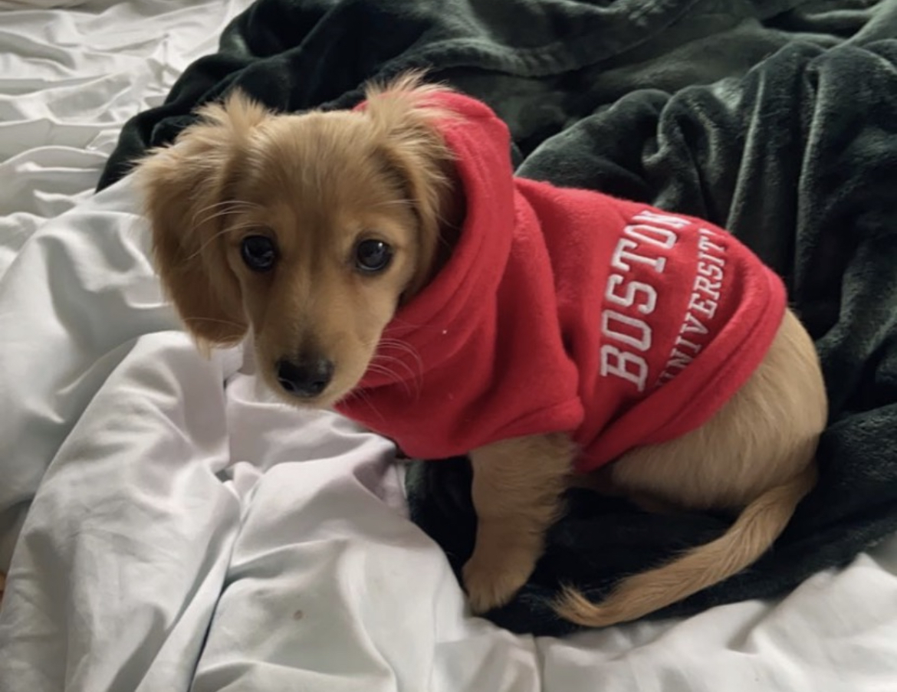
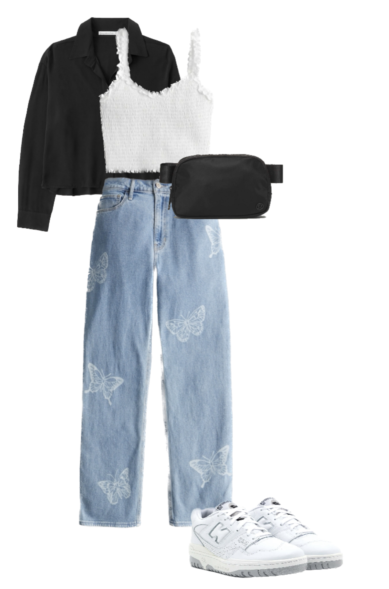
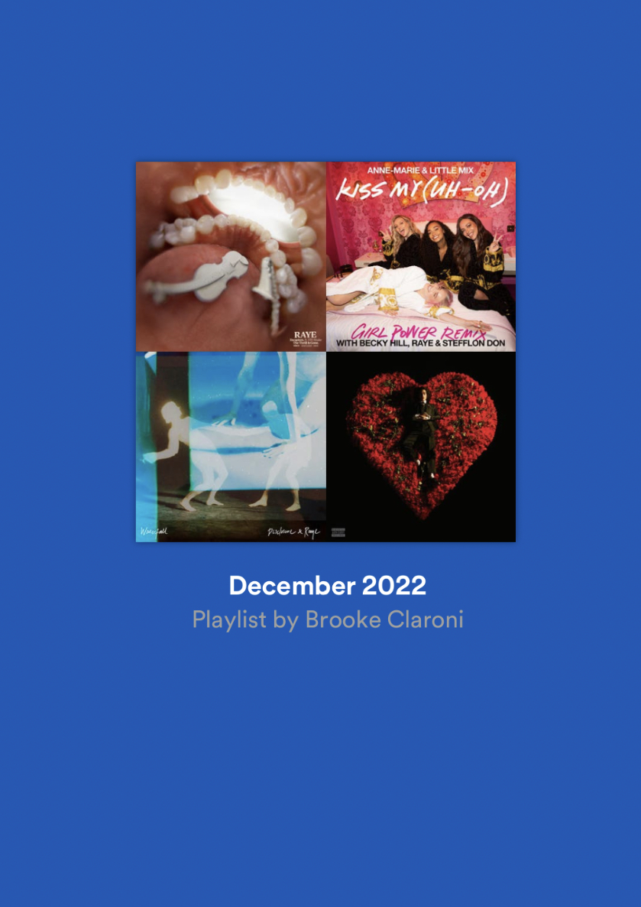

Gymnastics: I just concluded my 9 year competitive gymnastics career this fall. My favorite event is balance beam.
Coaching: I have been coaching gymnastics for about 6 years. My favorite level to coach is high school varsity.

Puppy Time: I have a one year old weiner dog named Sunny. I love to cuddle with her, play with her, and dress her up.
Nails: I started getting interested in nail art last year, and I used to pay nail tech to paint on my nails. Recently, I started painting my designs myself and posting results on Pinterest.

Fashion: I enjoy following the latest fashion trends and documenting my outfits every day in the StyleBook app. To reduce my person impact on textile waste, I resell my used clothes on Mercari when I'm done with them.
Music: I love listening to music, and have been making monthly playlists on Spotify every month for over seven years. My top genre is usually Pop.
